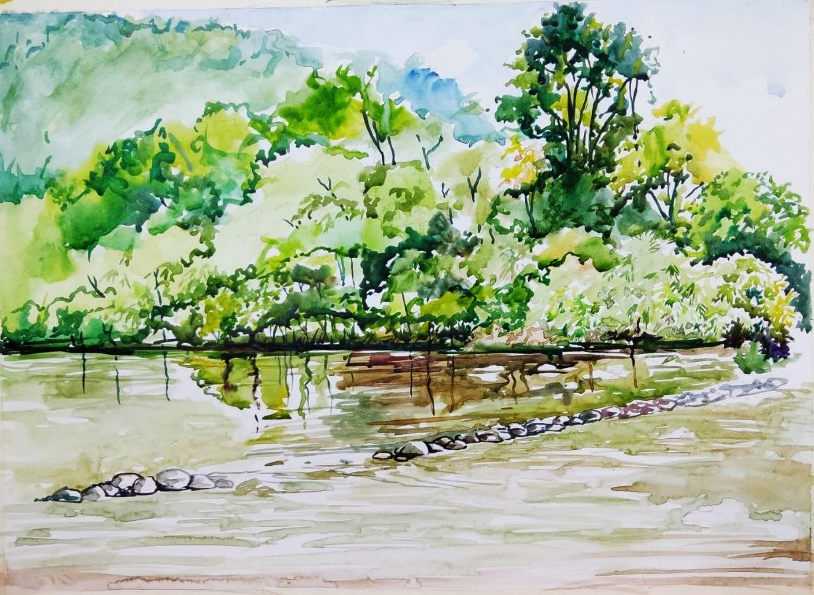

കവിത: സിനി തോമസ്
എൻ്റേതു മാത്രമായ പച്ചത്തുരുത്തിൽ
അൽപ്പനേരം ഒന്ന് ഒറ്റയ്ക്കിരിക്കണം
ആർത്തലച്ച മഴപ്പെയ്ത്തിൽ
ഞെരിഞ്ഞമർന്ന്
പതം വന്ന കല്ലുകൾ പെറുക്കി
സ്വപ്ന സൗധത്തിലേയ്ക്കുള്ള
വഴി മോടിയാക്കണം
ഇടയ്ക്കിടെ പൊള്ളിക്കാനെത്തുന്ന
വെയിലിനെ പറ്റിച്ച്
മുളത്തലപ്പുകൾ ഒരുക്കുന്ന തണലിലേയ്ക്ക്
മാറി മാറിക്കളിക്കണം
പട്ടു പോകുന്ന മുളങ്കുറ്റികളോട്
പുതുമുള പൊട്ടുന്നതിൻ്റെ
ആഹ്ലാദം പങ്കുവയ്ക്കണം
പാതിയിൽ മറന്ന പാട്ടിൻ്റെ ശീലുകൾ
ഓർത്തെടുത്ത് പാടി മുഴുമിക്കണം
ജീവിതത്തിൻ്റെ പച്ചത്തുരുകൾ
ഇനി വരാനുള്ളവർക്കായി
കാത്തു വയ്ക്കണം